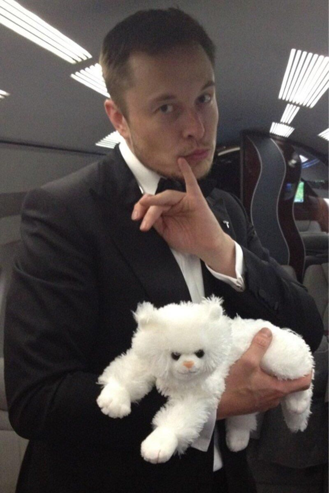

Entrepeneur/Engineer/Eccentric
10 Things You Didn't Know About Elon Musk:
- He thinks artificial intelligence could end humanity... "I think [AI] is something that's maybe more dangerous than nuclear weapons," Musk said on StarTalk, Neil deGrasse Tyson's weekly podcast. "It can conclude that an unhappy human should be terminated. Or that we should all be captured and [constantly] injected with dopamine and serotonin to optimize happiness. I'm just saying we should exercise caution."
- It’s been reported that Musk read the entire Encyclopedia Britannica by age nine. Musk taught himself to write computer code at the age of 12 and created a video game called Blastar, which he ended up selling for $500 to PC and Office Technology magazine.
- The first car that Musk ever owned was a BMW 320I. He bought the car for $1,400 in 1994 and drove it for two years until one of its wheels fell off.
- Musk has been referred to as a "thrillionaire," a new class of high-tech entrepreneurs looking to use their wealth to make science-fiction dreams into a modern reality.
- Musk is knowledgeable about many disciplines, and many people wonder how is he able to educate himself so effectively. During a Reddit AMA in 2015, a user asked about his process.
Musk replied, “I do kinda feel like my head is full! My context switching penalty is high and my process isolation is not what it used to be. Frankly, though, I think most people can learn a lot more than they think they can. They sell themselves short without trying. One bit of advice: It is important to view knowledge as sort of a semantic tree -- make sure you understand the fundamental principles, i.e. the trunk and big branches, before you get into the leaves/details or there is nothing for them to hang on to.”
- In an interview in the April 2017 issue of Vanity Fair, Musk shared that Douglas Adams’s The Hitchhiker’s Guide to the Galaxy -- a book about aliens destroying earth, creating supersonic highways and building a supercomputer that knows all of life’s mysteries -- was a “turning point” for him. In fact, the book had such an effect on Musk that he even slipped a reference to it into the Tesla Model S software.
- At the age of 69, Musk’s mom, Maye, became the new face of beauty brand CoverGirl.
This isn’t Maye’s first modeling gig. She’s been in the business since before Elon was born. She’s appeared on the covers of international beauty magazines as well as in campaigns for Clinique and Revlon. Today, she’s signed with modeling agency IMG Models Worldwide. She was also featured in Beyonce's music video for the 2013 song "Haunted.”
- His first business venture was an arcade Along with his brother and cousin, 15-year-old Musk started an arcade business, according to Vogue. The three boys managed to get the idea to the city zoning phase before their parents found out and stopped the budding businessmen.
- He once tried to grow plants on Mars In 2001, Musk said that the permanent settlement of Mars is a "a positive, constructive, inspirational goal capable of uniting humanity at a critical time." In lieu of any NASA plans to travel to the planet, he announced his “Mars Oasis” project, which planned to launch a mini-greenhouse to Mars, growing samples of food crops to test the feasibility of humans one day living off the planet’s land.
- He wants to make your brain more like a computer In 2017, Musk launched Neuralink, a neurotechnology startup company. It aims to integrate the human brain with artificial intelligence through implants which could boost memory, among other improvements.
Some of his best work